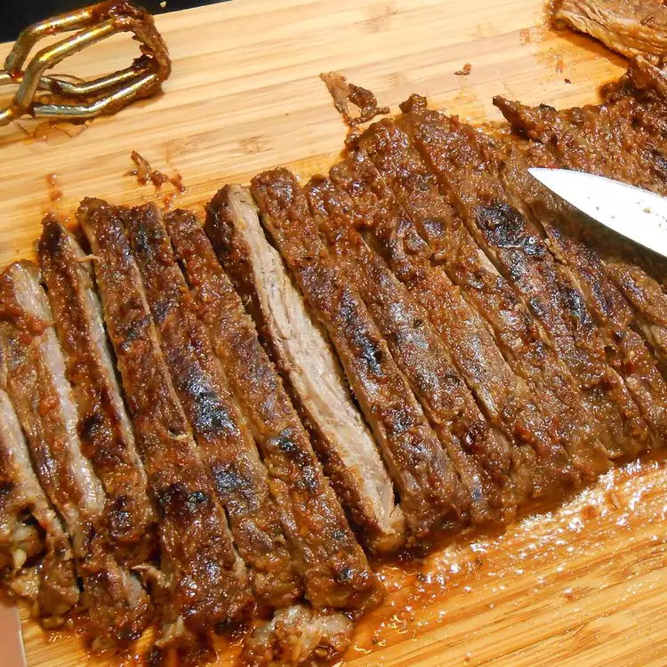

Grilled Mexican Steak

Description
This is a great way to serve skirt or flank steak. The two day marinade is worth the wait.
- ½ cup cumin seeds
- 5 jalapeno peppers, seeds and ribs removed, chopped
- 3 cloves garlic
- 1 tablespoon cracked black pepper
- ⅓ cup fresh lime juice
- 1 ½ teaspoons salt
- 1 ½ cups olive oil
- 2 bunches cilantro (leaves and stems)
- 1 (3 pound) skirt or flank steak
Home